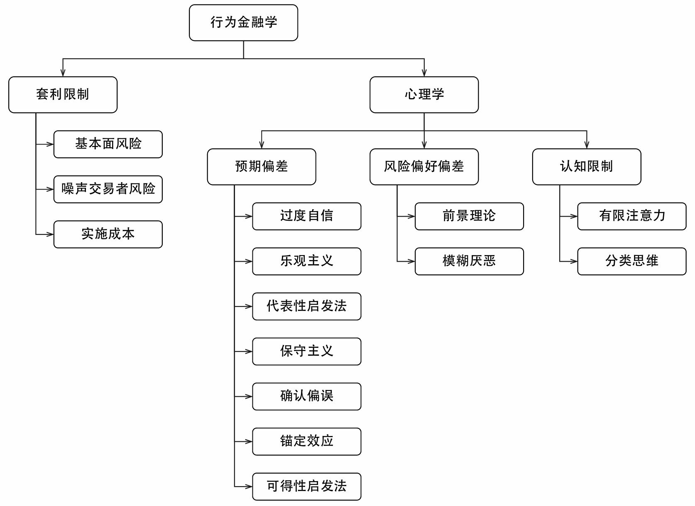
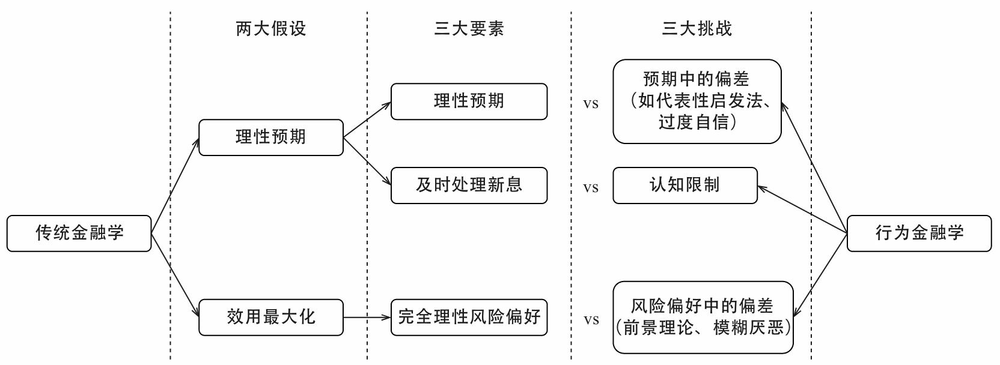
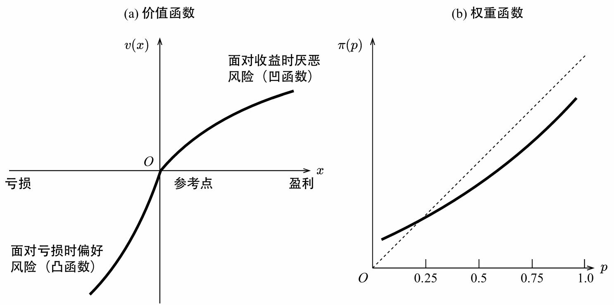
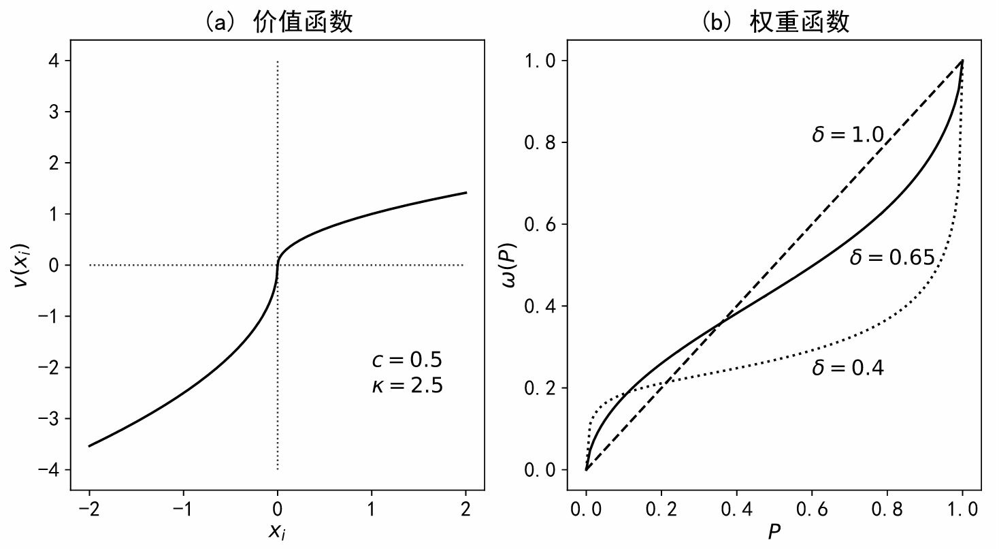
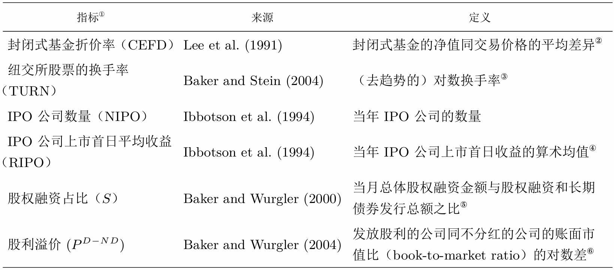
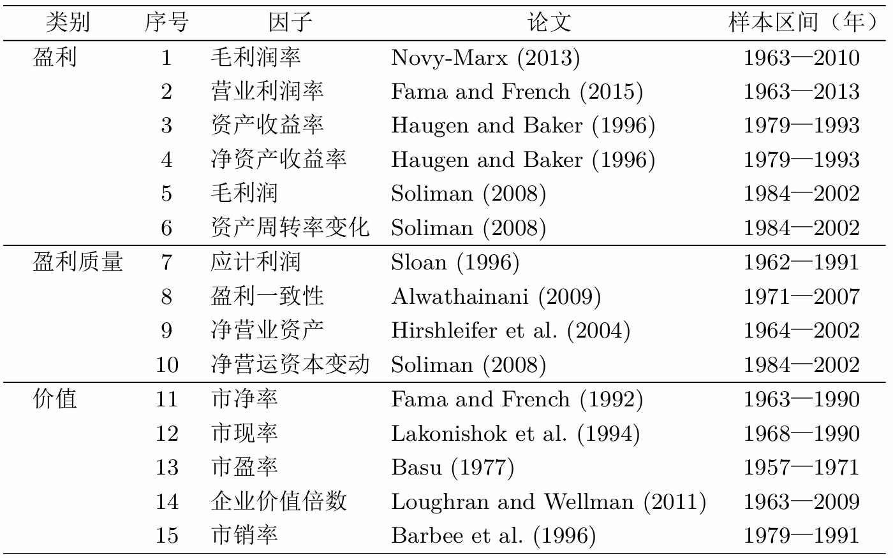
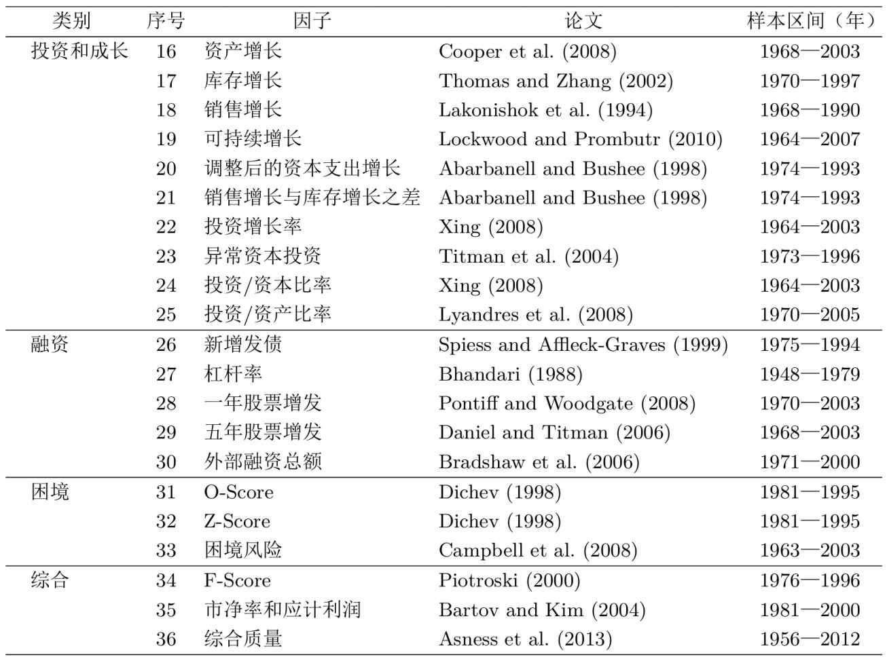
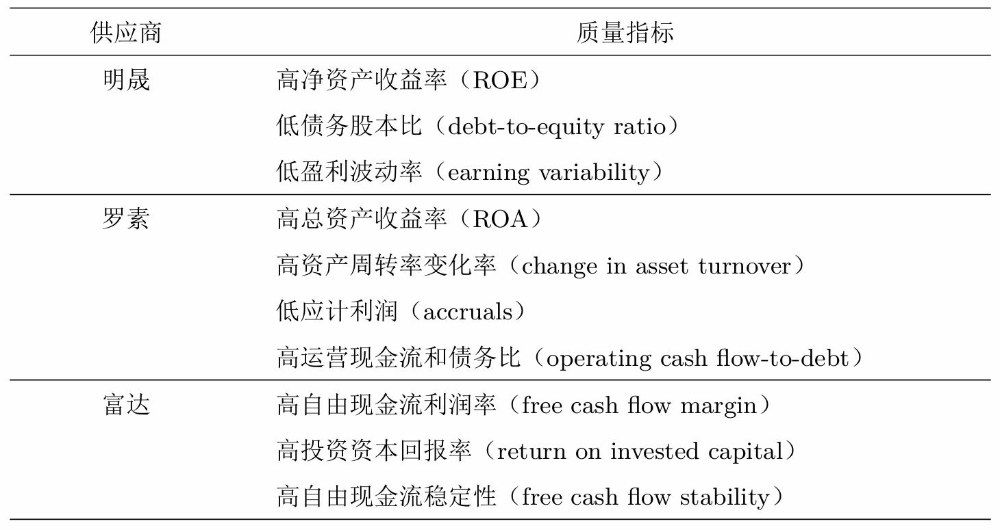
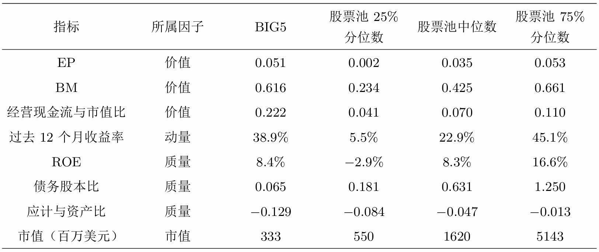

第6章 因子研究现状
导读
在过去的近三十年里，学术界发表了数百个能够预测股票未来收益的"因子"——从经典的市值、价值、动量，到董事会规模、股票代码首字母、甚至公司名字听起来是否悦耳。John Cochrane 教授用**"因子动物园"（factor zoo）**一词来讽刺这种现象：从前人们相信 CAPM（资本资产定价模型，即假设所有股票的预期收益只与市场风险相关）可以解释一切，现在取而代之的是一堆杂乱无章的因子，像动物园里的动物一样繁多。
然而，这些因子真的都可靠吗？如果每个因子都像它的发现者声称的那样有效，投资岂不是太简单了？
本章的故事从一场对统计显著性的疯狂追逐开始，走过多因子模型之间的"军备竞赛"，进入行为金融学为因子和异象提供的全新解释框架，审视投资者情绪如何驱动市场，剖析异象背后的三种可能真相，直面因子在样本外失效的残酷现实，反思量化方法能否取代基本面分析，最终抵达机器学习与因子投资交汇的最前沿。
6.1 p-hacking 与"因子动物园"
追逐 p-值的狂奔
在因子研究中，p-值（p-value）是判断一个因子是否"显著"的核心指标。它的严格定义是：在原假设（通常假设"因子预期收益为零"）成立的条件下，观察到当前（或更极端）数据的概率。用符号表示：
$$p = P(\text{数据} \mid H_0)$$
p 值越低，说明在"因子无效"的假设下，看到当前结果的可能性越小，于是研究者越有底气宣称因子有效。
但这个逻辑本身有一个巨大的陷阱。在美国学术界，如果一个金融学教授能在顶级期刊（如 Journal of Finance、Journal of Financial Economics）上发表论文，他很可能获得终身教职。而最吸引眼球的论文莫过于"我发现了一个新因子，它在统计上高度显著"。于是，整个学术界陷入了对低 p 值的疯狂追逐。
p-hacking 指的就是这种为了得到显著的统计结果而不断调整数据处理和分析方法的行为。学者们翻来覆去地尝试：用 30 年数据还是 50 年？用美股还是新兴市场？每年再平衡还是每月？剔除异常值还是不剔除？对数收益率还是百分比收益率？使用截面回归还是时间序列回归？每一次调整都可能让原本不显著的因子变得"显著"。正常的科学研究应该是"先提出假设，再用数据检验"，但 p-hacking 把它反过来——先有结果，再找假设，本质上是数据窥探和过拟合。
人们对 p-值的误解
Harvey (2017) 用一个精彩的例子揭示了人们对 p-值的普遍误解。假设你猜想"董事会规模小的公司比董事会规模大的公司收益更高"，构建因子组合后检验发现 p 值小于 0.01。现在判断以下四个陈述的正误：
- 我们证明了原假设（董事会规模与收益无关）是错的。
- 我们计算出了原假设为真的概率。
- 我们证明了小董事会公司真的有更高收益。
- 我们可以推断出"小董事会公司有更高收益"这个结论为真的概率。
答案是一个都没有。
p 值回答的是 $P(\text{数据} \mid H_0)$，而不是 $P(H_0 \mid \text{数据})$。这两者之间存在天壤之别，但无数人——甚至包括许多已发表论文的学者——把它们混为一谈。美国统计协会给出了六条关于 p-值的准则，核心意思是：p 值低不代表效应在经济上重要，科学结论不应只凭 p 值是否低于某个阈值就做决定，p 值本身也不能提供足够的证据。
多重假设检验：让问题雪上加霜
假设你同时检验 500 个因子。即使它们全都没用，仅靠运气，最"显著"的那个因子的 t 值超过传统阈值 2.0（对应 p 值约 0.05）的概率高达 99%。这就像让三亿人同时猜 20 次抛硬币的结果——按照概率，大约会有 250 人全部猜对，但这不代表他们有超能力，只是运气好罢了。
多重假设检验（multiple hypothesis testing）指的就是使用同样的数据同时检验多个原假设。当排除运气成分后，很多在样本内显著的因子其实根本站不住脚。
为了控制伪发现，学术界提出了三类统计量：
| 统计量 | 定义 | 特点 | 代表方法 |
|---|---|---|---|
| 族错误率（FWER） | $P(F_1 \geq 1) \leq \alpha_s$，出现至少一个伪发现的概率 | 最严格，会明显增加第二类错误（错过真实因子） | Bonferroni、Holm |
| 伪发现率（FDR） | $\text{FDR} = E[F_1/R] \leq \delta$，伪发现占总发现比例的期望 | 相对温和，允许伪发现随总发现增加 | Benjamini-Hochberg |
| 伪发现比例（FDP） | $P(F_1/R \geq \gamma) \leq \alpha_s$，限制伪发现比例超过阈值的概率 | 与 FDR 类似，但更关注极端情况 | Romano-Wolf |
Harvey et al. (2016) 研究了学术界 316 个因子，以控制 FDR 为目标进行分析，得出结论：单一假设下原始 t 值需超过 3.0（而非传统的 2.0）的因子，在排除多重检验后才可能真正有效。 按此标准，这 316 个因子中的伪发现比例约为 27%。
Chordia et al. (2020) 更进一步，以控制 FDP 为目标，认为对于时序回归 t 值需至少 3.8，Fama-MacBeth 回归需 3.4。这两个阈值都超过了 Harvey 建议的 3.0。原因是 Harvey 只研究了"已发表的因子"，而已发表的只是"已研究的"一个子集——学者们在发表论文之前可能尝试了无数因子但没写出来，你试得越多，运气成分越大，门槛就该越高。
先验的力量：三个小故事
面对发表偏差和多重假设检验的联合影响，如何从成百上千个因子中找到真正有效的？答案是：先验（prior）。先验来自人们对金融市场的客观认知，来自经济学和金融学理论的规律总结。
Harvey (2017) 用三个场景帮助我们理解先验的力量：
场景一：一位音乐家声称能完美分辨莫扎特和海顿的乐谱，连续 10 次全对。你一点都不惊讶——因为他是音乐家，这个先验概率本身就很高。实验结果只是确认了你的信念。
场景二：一个喝茶的老妇人声称能分辨奶茶是先加奶还是先加茶，连续 10 次全对。你有点怀疑（先验较低），但 10 次全对让你开始相信她可能真有这个本事。
场景三：一个酒馆老板说酒精赐予他预测未来的神力，连续猜对 10 次抛硬币。p 值再低也没用——"酒精能预测未来"的先验概率基本为零。10 次全对？只是运气好罢了。
这三个场景说明了同一个道理：当你解读统计结果时，先验知识比你想象的更重要。
Harvey (2017) 将传统 p 值嵌入贝叶斯框架，提出了贝叶斯 p 值（Bayesian p-value）——它是一个后验概率，回答的才是人们真正关心的问题：在观测到极端事件的条件下，原假设为真的概率 $P(H_0 \mid D)$。
计算需要用到最小贝叶斯因子 $\varphi$：
$$\varphi = -e \cdot p \cdot \ln(p)$$
或用 t 值表示：
$$\varphi = \exp\left(-\frac{t^2}{2}\right)$$
结合先验概率 $\pi$（即你认为该因子有效的主观概率），后验贝叶斯 p 值为：
$$\text{贝叶斯 } p = \frac{\varphi \cdot \pi}{\varphi \cdot \pi + (1 - \pi)}$$
Harvey (2017) 做了三类假设进行实证分析：
| 因子类型 | 先验概率 $\pi$ | 代表因子 | 原始 p 值 | 后验贝叶斯 p |
|---|---|---|---|---|
| 非常不可能 | 2% | "聪明股票代号"因子 | 0.0079 | 0.588（不显著） |
| 可能 | 20% | FF 五因子中的盈利因子 | 极低 | 0.053（边缘） |
| 非常可能 | 50% | 市场因子 | 极低 | 0.035（显著） |
"聪明股票代号"因子（Head et al. 2009）指的是有些股票代码听起来更令人愉悦，因此有超额收益。原始 p = 0.0079 看似非常显著，但给它 2% 的先验后，后验贝叶斯 p 飙升到 0.588——根本通不过任何常见的显著性检验。反过来，市场因子因为有着坚实的理论基础，即使在 50% 的先验下仍然显著。
核心启示：一个因子靠不靠谱，不能只看它在回测里有多"显著"，更要问它背后有没有站得住脚的经济学或金融学逻辑。如果没有，那它很可能只是数据窥探的产物——在样本内光芒四射，一到样本外就原形毕露。
6.2 从"因子动物园"到"因子大战"
如果说 6.1 节批评的是学者们为了发论文疯狂挖因子，6.2 节批评的则是学者们把多因子模型当成了解释异象个数的竞赛工具。两个问题一脉相承：当人们忘记了"为什么"，而只追求"更多"时，科学就变成了数字游戏。
投资因子的理论之争
Fama-French 五因子模型和 Hou-Xue-Zhang 四因子模型（简称 q4 模型）都包含一个投资因子，而且构建变量几乎一模一样：过去一年总资产的变化率。但看似相同的变量背后，理论根基截然相反。
q4 模型的投资因子来自实体投资经济学理论（q-theory of investment）。从它的数学模型出发，可以推导出股票的预期收益率与过去的投资水平成反比——公司过去投得越多，未来股票收益越低。
Fama-French 五因子的投资因子则来自股息贴现模型（dividend discount model）。从它的数学形式出发，推导的是预期收益率与未来的预期投资成反比。但未来投资是观测不到的，所以 Fama and French (2015) 退而求其次，用历史投资作为未来投资的朴素估计。
Hou et al. (2019b) 从理论和实证两方面质疑了 FF 五因子的投资因子。理论上，当你把股息贴现模型中的长期平均收益率替换为未来单期收益率时，得到的关系式中预期投资和预期收益率之间实际上是正相关的，而非 FF 所说的负相关。FF 的投资因子之所以能"碰巧"有效，不是因为来自股息贴现模型的严谨推导，而是阴差阳错地利用了实体投资经济学支持的"历史投资与收益负相关"。
实证上，由于 q4 在构建投资因子时使用市值、ROE 和总资产变化率三个指标做 $2 \times 3 \times 3$ 三重排序法（因为投资和收益率的负相关是在控制 ROE 之后才成立的），而 FF 五因子只用市值和总资产变化率做 $2 \times 3$ 双重排序，没有控制 ROE，q4 的投资因子表现完胜 FF。
q5 模型
Hou et al. (2020) 在 q4 基础上添加了预期投资增长因子，构建了 q5 模型。动机来自 Cochrane (1991) 的理论结论：在控制住当期投资和预期盈利的条件下，预期投资增长率和预期收益率成正比。
在多期投资模型中，资产从 $t$ 到 $t+1$ 期的折旧率为 $\delta$。根据投资第一性原理，投资收益满足：
$$1 = E_t\left[M_{t+1} \cdot \left(\frac{\partial Y_{t+1}}{\partial I_t} + (1-\delta) \cdot \frac{\partial V_{t+1}}{\partial K_{t+1}}\right)\right]$$
其中 $M_{t+1}$ 是随机折现因子，$V_{t+1}$ 是公司价值，$K_{t+1}$ 是资本存量。第一项近似对应分红收益，第三项对应投资与总资产之比的预期增长。由此，Hou et al. (2020) 把预期投资增长作为第五个因子，得到了 q5 模型。
因子大战的硝烟
2015 年 q4 提出时，用 80 个异象作为测试资产，结论是新模型战胜了三因子和 Carhart 四因子。2017 年 Stambaugh-Yuan 四因子模型发表，照例与旧模型对比。2018 年 Daniel-Hirshleifer-Sun 三因子模型在 AFA 年会上首次亮相，从行为金融学出发构造了长、短两个时间尺度的行为因子。该模型没有包含规模因子——因为从行为金融学理论无法推演出规模因子——但这反而在讨论环节受到质疑。你看，当所有人都盯着"谁能解释更多异象"时，一个模型不包含某个因子反而成了它的"原罪"。
随着 q4 被后续模型不断"击败"，Hou et al. (2019b) 携 q5 强势回归，实证结果显示 q5 能解释最多的异象。至少到目前为止，q5 是实证资产定价领域"最强"的模型——当然，学术界迟早会搞出新模型来打败它。
而在这场烽鼓不息的大战中，Fama and French (2018) 的一篇 Choosing Factors 保持了令人尊敬的冷静。他们认为，虽然 CAPM 和 CCAPM 被实证拒绝了，但它们至少在收益和风险之间建立了理论联系。当前层出不穷的多因子模型如果缺乏足够的理论支撑，就会退化成纯粹的数据挖掘游戏——对着成百上千个因子，以提高事后有效前沿上切点组合的夏普比率为目标，不断堆砌。因子的本质是解释股票收益率如何共同运动，因此因子必须与个股收益率的协方差矩阵密切相关。仅以谁解释的异象更多为依据来评判模型高下，和多因子模型的初衷南辕北辙。
因子大战的警示：人们总能从不同的金融学或经济学模型出发，推导出截然相反的结果，然后对着历史数据讲出一个最契合的故事。可问题是，这样讲故事真的让我们离真相更近了吗？
6.3 用行为金融学解释异象和因子
在行为金融学出现之前，人们对因子的理解基本只有一个角度：它们是某种系统性风险的补偿。价值因子之所以有效，是因为价值股承担着某种风险；规模因子有效，是因为小盘股在经济危机时跌得更惨。这种说法本身无法证伪，所以在很长时间里大家都接受了。
但行为金融学给出了另一个同样有力的解释框架：因子之所以有效，可能是因为它们捕捉了市场中普遍存在的错误定价。投资者不是完全理性的，他们的行为偏差导致价格系统性地偏离内在价值，而因子恰好暴露在这些偏差的来源上。
这一节的理论框架可以概括为两大支柱：一是套利限制——为什么错误定价不会被立刻纠正；二是心理学——投资者的各种系统性认知偏差如何造成错误定价。心理学下面又分成三块：预期中的偏差、风险偏好中的偏差，以及认知限制。


6.3.1 套利限制
传统金融理论说，如果价格偏离了内在价值，理性的套利者会立刻冲进去买卖，把价格拉回来。但现实中这常常失灵，因为套利者要面对三重风险。
第一重是基本面风险。 假设某只股票因为噪声交易者的抛售而跌到远低于内在价值，你想买入套利。但你不可能找到一只和它基本面完全相同的股票来做空对冲——任何替代物总有差异。一旦这只股票的基本面真的恶化了，你就血本无归。完美的对冲标的不存在。
第二重是噪声交易者风险，这也是最精妙的一重。噪声交易者的非理性可以把价格推得更偏离价值，而且偏离的时间可能比你想象的更长。De Long et al. (1990) 和 Shleifer and Vishny (1997) 的经典研究指出，套利者管理的资金往往是别人的钱——客户只看短期业绩。当噪声交易者把价格推得更离谱时，你的套利策略会短期持续亏损，客户就会赎回资金。你明知道价格最终会回归，但你等不到那一天就已经被迫平仓了。这就是噪声交易者风险造就的职业风险（career risk）：短期的惨淡业绩导致资金被赎回，迫使你放弃正确的长期判断。
第三重是实施成本。 做空有费用，交易有滑点，寻找错误定价本身就要花时间和金钱。在很多市场做空甚至是不可能的。
正是因为套利受到这三重限制，错误定价才可以持续存在。行为金融学在 20 世纪 90 年代因为套利限制理论的提出，终于打破了传统金融学"非理性行为会被立刻套利消除"的批评，奠定了自己作为一个独立研究领域的地位。
6.3.2 预期中的偏差
如果说套利限制是错误定价得以持续的"果"，那么投资者的各种认知偏差就是造成错误定价的"因"。以下是人们在形成预期时系统性地犯下的错误。
过度自信（overconfidence）恐怕是最根深蒂固的一种。它体现在两个方面：人们对自己判断的自信程度总是高于该判断的准确性；而且人们总认为自己比别人更优秀。在一项研究中，被试者被要求估计某地区加油站的数量并给出 90% 的置信区间，结果真实值落在这些区间内的频率只有 50% 左右——人们给的范围太窄了。另一项针对 600 名基金经理的调查中，74% 的人认为自己优于同行。如果没有过度自信，这个数字应该是 50%。过度自信在很大程度上解释了市场上每天庞大的交易量：当新信息出现时，由于各自处理信息的方式不同，加上过度自信，投资者会认为自己比别人更正确，从而产生分歧、进而交易。
乐观主义（optimism）几乎是天生的。2008 年 2 月，91% 的分析师预测市场会有牛市。乐观常常被控制幻觉（illusion of control）放大——人们总觉得结果是可控的，连续几次猜对硬币就觉得自己是"天选之人"。自利偏差（self-serving bias）也在推波助澜：人们的决策天然倾向于有利于自己的解释。一个有趣的实验是，139 位审计师审核有争议的会计报告，那些被要求从公司立场出发的人，认为报告没问题的比例比从中立立场出发的人高了 31%。
代表性启发法（representativeness heuristic）来自 Tversky and Kahneman (1974) 的经典研究。当人们判断样本 A 是否来自类别 B 时，倾向于看 A 和 B 的相似程度，而忽视基础概率和样本大小。一个经典的例子：某人被描述为"非常害羞、乐于助人但不喜欢与人打交道、温顺、执着于事物的有序性并对细节有极致追求"，你觉得他是农民、销售，还是图书管理员？大多数人会选图书管理员，因为这个描述太像了。但问题是，现实世界中农民的数量比图书管理员多得多。如果你用贝叶斯定理严格计算：
$$P(\text{职业} \mid \text{描述}) = \frac{P(\text{描述} \mid \text{职业}) \cdot P(\text{职业})}{P(\text{描述})}$$
人们过度关注 $P(\text{描述} \mid \text{职业})$（相似性），却严重低估了 $P(\text{职业})$（先验概率），所以给出了错误答案。
代表性启发法还会导致小数定律偏误（law of small numbers）——人们相信少数样本就能反映总体特征。新闻报道里常有"大数据告诉你某某月大盘怎么走"的标题，点进去一看，所谓的大数据就十来个样本点。
外推信念（extrapolative beliefs）是代表性启发法的直接后果。当人们预测未来时，预测值往往和近期数据正相关。股票涨得好，就觉得未来还会涨；现金流增长快，就觉得会以同样的增速继续增长。这种外推导致了动量（短期）和长期反转（当增长不及预期时）两种看似相反却都存在的现象。
保守主义（conservatism）说的是人们一旦形成了观点，就拒绝接受新信息；即便必须改变，也非常缓慢。背后的原因是沉没成本——你已经花了那么多精力才得到现在的结论，哪怕它是错的，你也不舍得推翻。一个实验很说明问题：某飞机公司投入了 1000 万美元研制隐形飞机，项目进行到 90% 时得知竞争对手已经造出了更好的产品。80% 的被试者认为应该把最后 10%（100 万美元）花完。但如果换一种表述：公司还有 100 万美元研究经费，有人提议用它研究隐形飞机，同时得知竞争对手已经有了更好的产品，80% 的人又说不应该。同样的 100 万美元，不同的叙事框架，人的判断完全翻转——这就是沉没成本对决策的干扰。
确认偏误（confirmation bias）是指人们选择性地回忆和搜集支持自己已有观点的证据，同时忽略矛盾的资讯。一个经典实验：四张卡片分别是 A、Q、4、7，规则是"每一个元音字母卡片的背面都是偶数"。你可以翻两张卡片来验证。大多数人会翻 A 和 4——因为 A 是元音，4 是偶数。但 4 是偶数，翻它什么也证明不了，因为规则没说偶数背面必须是元音。你应该翻 A 和 7——如果 7 背面是元音，规则就被证伪了。这个实验说明人们本能地寻找证实证据，而不是否定证据。在投资中，分析师一旦有了结论，就会陷入确认偏误，只找支持论据；亏损的交易者也会拒绝接受事实，拼命寻找证明自己持仓正确的证据。
锚定效应（anchoring）指的是人们做决定时过度依赖最先接收到的信息——那个"锚"——哪怕它和决策毫无关系。Tversky and Kahneman (1974) 的实验中，两组参与者被要求猜测美国人口中非洲裔的百分比。在猜测之前，每组都先转一次幸运转盘。第一组转到 10，他们猜测非洲裔占 25%；第二组转到 65，他们的猜测高达 45%。转盘结果和真实百分比毫无关系，但它成了一个锚，把人们的判断死死拽住。另一个更离谱的研究中，600 名基金经理先写下手机号码后四位，然后猜测伦敦有多少医生。手机号后四位大于 7000 的人，大部分猜 8000 名；后四位小于 3000 的人，大部分猜 4000 名。
在投资中，锚定效应让人们过分依赖某个历史价格而忽视最新变化。Li and Yu (2012) 发现投资者常用过去 52 周高点和历史高点作为锚。当前价格离 52 周高点越近，说明投资者对好消息反应不足；离历史高点越远，说明投资者对坏消息反应过度。
可得性启发法（availability heuristic）是一种心理捷径：人们在评估问题时，依赖脑海中最容易想起的例子。当被问英文中以字母 r 开头的单词多，还是 r 在第三个位置上的单词多时，你会马上想到 rat、road、read、result 这些以 r 开头的词，却很难想到 car、bar、sort 这些 r 在第三位的词。所以你错误地认为前者更多，但事实恰恰相反。在投资中，可得性启发法让人们被最近发生的事左右——投资者倾向于购买那些上了新闻头条、交易量异常大、单日涨幅极高的股票，因为它们在记忆中太鲜明了。
6.3.3 风险偏好中的偏差
传统经济学假设人们按照期望效用理论（expected utility theory）做决策——计算每个选项的期望效用，选最大的。但心理学家 Kahneman 和 Tversky 在 1979 年提出了前景理论（Prospect Theory），从根本上挑战了这个框架。后来 Tversky 和 Kahneman (1992) 又做了扩充，提出了累积前景理论（Cumulative Prospect Theory），给出了完整的数学表达式。这个理论后来成为行为金融学最重要的基石之一。
前景理论的基本框架
假设你面对一个选项，它以概率 $p$ 产生结果 $x$，以概率 $q$ 产生结果 $y$，数学上记为 $(x, p; \, y, q)$。在前景理论中，这个选项的价值不是期望效用 $p \cdot u(x) + q \cdot u(y)$，而是：
$$V = v(x) \, \pi(p) + v(y) \, \pi(q)$$
这里有两个关键函数：$v(\cdot)$ 是价值函数（value function），替代了传统效用函数；$\pi(\cdot)$ 是权重函数（probability weighting function），把客观概率转换成人们主观感知到的权重。

价值函数的三条性质
价值函数 $v(x)$ 的行为和传统效用函数截然不同，呈 S 型，有三条关键性质：
第一，参考点依赖（reference dependence）。人们评估的不是最终财富水平，而是相对于某个参考点的得失。假设你现在有 1000 元，一个游戏让你以相等概率变成 1100 元或 950 元。传统理论会用 1100 和 950 作为输入计算效用；前景理论则用 $+100$ 和 $-50$ 作为输入——相对你现在的 1000 元参考点。$x > 0$ 叫"盈利"（gains），$x < 0$ 叫"亏损"（losses）。
第二，损失厌恶（loss aversion）。价值函数在原点两侧不对称：亏损部分的负增长快于盈利部分的正增长：
$$v(x) < -v(-x) \quad \text{当 } x > 0$$
实证研究表明，亏损带来的痛苦大约是同等盈利带来快乐的两倍。
第三，敏感度递减（diminishing sensitivity）。无论是盈利还是亏损，边际价值都在递减。盈利时 $v(\cdot)$ 是凹函数；亏损时 $v(\cdot)$ 是凸函数。
在累积前景理论（Tversky and Kahneman 1992）中，价值函数被参数化为：
$$v(x) = \begin{cases} x^c & \text{if } x \geq 0 \\ -\kappa \, (-x)^c & \text{if } x < 0 \end{cases}$$
其中 $c \in (0, 1)$ 控制敏感度递减的快慢，$\kappa > 1$ 是损失厌恶系数。根据实验数据，参数取值为 $c = 0.88$，$\kappa = 2.25$。

权重函数
权重函数 $\pi(p)$ 不是概率，它是某个结果对选项整体价值的影响力权重。Kahneman and Tversky (1979) 总结出它的定性特征：当 $p$ 很小时，$\pi(p) > p$（高估小概率事件）；当 $p$ 中等或较大时，$\pi(p) < p$（低估中等和高概率事件）。
生活中到处都是例子。买彩票——中奖概率可能只有千万分之一，但人们放大了这个可能性。买保险——事故概率同样很低，但人们高估了它。这两个看似矛盾的行为在期望效用理论里很难解释，但在前景理论下统一得很自然。
在累积前景理论中，权重由累积权重函数 $w^+(\cdot)$ 和 $w^-(\cdot)$ 决定：
$$w^+(P) = \frac{P^\gamma}{\bigl(P^\gamma + (1-P)^\gamma\bigr)^{1/\gamma}}$$
$$w^-(P) = \frac{P^\delta}{\bigl(P^\delta + (1-P)^\delta\bigr)^{1/\delta}}$$
Tversky and Kahneman (1992) 给出的实验值是 $\gamma = 0.61$，$\delta = 0.69$。参数小于 1 时，权重函数呈反 S 型——两端翘起，中间下压。一个具体的数值：假设 $\gamma = \delta = 0.65$，某个极端盈利结果的真实概率是 $p = 0.01$，则 $w^+(0.01) \approx 0.047$——被高估了近五倍。
模糊厌恶
前景理论研究的是风险已知（概率分布明确）时的决策偏差。如果连概率分布本身都是未知的，就涉及模糊厌恶（ambiguity aversion）。
Ellsberg (1961) 的经典实验：两个罐子各装 100 个红蓝小球。罐子 1 里红蓝比例未知；罐子 2 里确定红蓝各 50 个。大多数人宁愿从罐子 2 抽球（概率已知），不管抽红抽蓝——哪怕在逻辑上这会导致不一致的选择。这说明人们纯粹地讨厌不知道概率分布这件事本身。
在投资中，模糊厌恶表现为人们倾向选择自己熟悉的标的。巴菲特说"不要投资你不懂的生意"，这本身是对的。但问题是，过度自信、确认偏误等其他偏差会让你误以为自己熟悉某个领域，结果在自己"以为懂"的地方栽得更惨。
6.3.4 认知限制
心理学对行为金融学的第三大挑战，是人的大脑处理信息的能力是有限的。这种有限理性（bounded rationality）框架下，人们只能在认知约束下做次优选择。
有限注意力
Huberman and Regev (2001) 提供了一个极其精彩的例子。1998 年 5 月 3 日，《纽约时报》在封面报道了 EntreMed 公司在治疗癌症方面的重大技术突破。第二天该公司股价暴涨 330%。但同样这个消息早在半年前的 1997 年 11 月就已经在《自然》杂志和多家主流媒体上报道过了，当时股价却毫无波澜。消息本身早就存在，但它没有登上《纽约时报》头版时，几乎没人注意到它。一旦它被放到了聚光灯下，同样的信息就引发了疯狂追捧。
DellaVigna and Pollet (2007) 从另一个角度证明了这一点。如果今年婴儿出生率激增，理性投资者应该立刻想到六年后的玩具需求会暴增，从而提前布局玩具公司。但事实并非如此——人们不会那么远地提前反应，信息需要被"注意到"才会进入定价过程。
分类思维
市场里有成千上万只股票，投资者会把它们分类——价值股、成长股、小盘股、高质量股等等。一旦分类形成，投资者在判断个股时更多考虑的是它属于哪个类别，而不是它自身的基本面。这造成了同类股票显著的共同运动。
Barberis et al. (2005) 发现了一个违反直觉的现象：当一只股票被纳入标普 500 指数后，它就开始和其他成分股一起共同运动，相关性明显上升。如果投资者是完全理性的，这种相关性提高的唯一解释应该是该股票的基本面和其他成分股变得更相关了——但数据不支持。真正的原因是分类思维：股票一旦被贴上"标普 500 成分股"的标签，投资者就把它和那个篮子里的其他股票放在一起看待，买卖时同步操作，从而人为地制造了共同运动。
6.3.5 行为金融学与市场异象
预期偏差导致的异象
盈余惯性（Post-Earnings-Announcement Drift, PEAD）可能是最经典的例子。公司在发布业绩公告后，股价不会立刻调整到位，而是会继续朝着公告暗示的方向漂移。这是因为投资者对新的基本面信息反应不足，根源正是有限注意力。DellaVigna and Pollet (2009) 发现，如果业绩公告落在星期五，随后的 PEAD 更加显著——因为临近周末，投资者的注意力更涣散。Hirshleifer et al. (2009) 则发现，当很多公司同时发布财报时，由于信息处理能力有限，PEAD 也会更强。
动量异象也可以用类似的逻辑解释，但机制略有不同。Barberis et al. (1998) 提出，当利好消息出现时，保守主义让投资者过于固执于自己的先验判断——他们不愿意立刻更新认知，好消息无法一次性反映在股价上，而是随着后续更多利好的逐步释放，价格才慢慢爬升，形成动量。但当好利接二连三出现时，投资者又会切换到代表性启发法模式，开始过度外推——认为公司过去的盈利增长会一直持续。等到未来增长不及预期，恐慌性抛售就发生了，造成长期反转和价值异象。你看，保守主义造成了动量，而外推造成了反转——两种看似相反的异象，来自同一种心理机制在不同时间尺度上的表现。
Daniel et al. (1998, 2001) 的研究从过度自信和确认偏误切入。投资者在做深入研究后会对自己的结论过度自信，确认偏误让他们只关注支持自己结论的公共信息，从而推高价格形成动量和盈余动量。当后续出现相反信息时，过度自信被击碎，价格修正，造成反转和价值异象。
Hong and Stein (1999) 提出了一个统一理论，用信息传播的缓慢来解释动量和反转。他们的模型里有基本面交易者和动量交易者两类人。基本面交易者有私有信息，但无法从价格中感知其他基本面交易者掌握的信息——这导致信息是逐渐扩散的，短期内价格反应不足，动量交易者利用这一点获利。但大量动量交易者采用相同策略时，最终引发过度反应和长期反转。
风险偏好偏差导致的异象
偏度异象是其中最著名的一个：收益率分布呈右偏（正偏态）的股票，未来预期收益率往往更低。右偏股票右尾有极高收益的可能，左尾亏损相对有限——很像彩票，学术界也形象地把它们称为彩票股（lottery stocks）。Barberis and Huang (2008) 的解释直接来自前景理论的权重函数：人们在决策时会高估小概率的尾部事件。右偏股票那个诱人的右尾高收益，尽管概率极低，但在投资者心目中被放大了权重，导致过度追逐、推高价格、压低未来收益。
处置效应（disposition effect）把价值函数的性质展现得淋漓尽致。你可能有过这样的体验：手里涨了的股票总想卖，落袋为安；跌了的股票却迟迟舍不得割，一心等它回本。这在前景理论里有着非常清晰的数学直觉——价值函数在盈利端是凹的（风险厌恶，倾向于锁定小收益），在亏损端是凸的（风险寻求，宁愿赌一把回本），加上损失厌恶让人们特别不愿意承认亏损。Shefrin and Statman (1985) 最早命名了这个现象。
处置效应不仅解释了个体投资者的行为，还能用来改进对其他异象的理解。学术界引入了未实现盈利值（capital gain overhang, CGO）来衡量一只股票整体上处于浮盈还是浮亏状态。
Frazzini (2006) 用 CGO 改进了 PEAD。当投资者处于浮亏且公告是坏消息时，处置效应让他们不愿意卖（不承认亏损），有限注意力让他们对坏消息反应不足——两个偏差同向作用，股票被进一步高估。反过来，浮盈加好消息时，处置效应促使卖出锁定收益，有限注意力又对好消息反应不足——两个偏差仍然同向，股票被进一步低估。而在另外两种组合下（浮亏+好消息，浮盈+坏消息），两种偏差相互抵消。利用这个洞见，用 CGO 改造后的 PEAD 策略比普通 PEAD 显著得多。
Wang et al. (2017) 用 CGO 重新诠释了低波动异象：浮亏时投资者想冒险回本，追逐高波动股票，造成它们被高估；浮盈时风险厌恶，卖出高波动股票，造成它们被低估。
An et al. (2020) 发现，当人们浮盈时不会太关注彩票股，它们和非彩票股收益差异不大；但浮亏时更希望通过彩票股一把回本，造成彩票股被进一步高估。
最后要提的是 Barberis et al. (2016) 和 Barberis et al. (2019)，两篇综合运用前景理论价值函数和权重函数的集大成之作。Barberis et al. (2016) 每个月初用每只股票过去 60 个月的收益率作为盈亏结果，套用累积前景理论计算前景理论价值，发现该价值和未来收益负相关——在美股和 46 个国家的实证中都能获得其他因子无法解释的超额收益。Barberis et al. (2019) 更进一步，结合前景理论和狭隘框架（narrow framing，人们倾向于把不同投资的盈亏独立看待，而非从组合整体角度评估），提出了动态投资者决策模型。该模型能很好地解释动量、异质波动率、异质偏度、盈利以及 PEAD 等异象，但无法解释市值、价值、反转、应计利润以及投资等异象——这些可能需要其他机制来解释。
6.3.6 行为有效市场
长久以来，有效市场假说（Efficient Market Hypothesis, EMH）是学术界理解市场的第一范式。Fama 提出了三个核心假设：市场立即对新信息做出反应；新信息的出现是随机的；投资者是理性的。在这些假设下，股价走势应该是阶梯型的——好消息瞬间跳升，坏消息瞬间下跌，没有新信息时保持不变。
但这显然不是真实市场的样子。Shiller (1981) 发现价格的波动比基本面的波动大得多。如果资产定价的基本公式 $p_t = E_t[M_{t+1} \cdot x_{t+1}]$ 成立——当前价格等于未来回报经随机折现因子 $M_{t+1}$ 加权后的期望——那么价格的波动只能来自折现因子的波动或基本面的波动。既然实际观察到的价格波动远超基本面波动，唯一合理的解释就是折现因子的波动太大，而传统的消费资本资产定价模型解释不了这种高波动。
所以市场看起来不是有效的？但另一方面，市场又很难被打败。这种矛盾怎么理解？
Statman (2018) 提出了巧妙的调和方式：把有效市场假说拆成两层含义。第一层是"价格等于价值"假说——价格是内在价值的无偏估计。第二层是"市场难以被战胜"假说——普通投资者无法通过公开信息获得超额收益。仔细体会就会发现，这两层分别对应着行为金融学的两大支柱。"价格等于价值"之所以通常不成立，是因为心理学造成的投资者行为偏差让价格偏离价值，而套利限制又阻止了偏离被迅速纠正。但"市场难以被战胜"之所以通常成立，是因为普通投资者只掌握公开信息，而那些有私有信息优势的人毕竟是少数。更关键的是，认知偏差制造了一波又一波前赴后继的噪声交易者，他们产生了能够战胜市场的幻觉，实际上却在不断犯错。
人们常说的"天下没有免费的午餐"，一直以来被理解为"因为价格等于价值，所以没有免费午餐"。但从行为金融学的套利限制可知，即便在非有效市场中，没有免费午餐也可以成立，而且不能从它反推出价格等于价值。这二者的关系就像数学里的原命题和逆命题。
这让我想到 Fischer Black 在 1986 年美国金融协会年会上的那句经典演讲：
"Noise causes markets to be somewhat inefficient, but often prevents us from taking advantage of inefficiencies." （噪声让市场有些无效，但同样阻止我们利用这种无效性。）
这句话完美地概括了行为有效市场的双重属性——价格可以偏离价值，但你很难从中稳定获利。
6.4 投资者情绪
从 6.3 节的讨论可以看到，投资者的预期偏差和风险偏好偏差五花八门，每一种都对应着特定的异象。但在真实市场中，这些偏差并不是孤立运作的，而是交织在一起，共同影响着个股和整体市场的走势。那有没有一个单一的指标，能够在一定程度上综合反映所有这些偏差——乃至其他未知因素——对预期收益率的总体影响呢？
答案是肯定的，它就是投资者情绪（investor sentiment）。
6.4.1 投资者情绪的度量
投资者情绪没有唯一的定义，但一种典型的理解是：它代表了投资者对未来预期的系统性偏差。情绪高涨时，投资者对个股和整体的未来预期和需求都更高；情绪低迷时则相反。这种定义有两个要素：一是它与各种行为偏差有关；二是它是一个加总指标，反映全部投资者的综合预期偏差。
Baker and Wurgler (2006) 的工作是集大成者。他们选取了六个细分指标，通过两步主成分分析法构建综合情绪指数：
| 指标 | 符号 | 来源 | 定义 |
|---|---|---|---|
| 封闭式基金折价率 | CEFD | Lee et al. (1991) | 封闭式基金净值与交易价格的平均差异 |
| 纽交所股票换手率 | TURN | Baker and Stein (2004) | （去趋势的）对数换手率 |
| IPO 公司数量 | NIPO | Ibbotson et al. (1994) | 当年 IPO 公司的数量 |
| IPO 公司上市首日平均收益 | RIPO | Ibbotson et al. (1994) | 当年 IPO 公司上市首日收益的算术均值 |
| 股权融资占比 | $S$ | Baker and Wurgler (2000) | 当月总体股权融资金额与股权融资和长期债券发行总额之比 |
| 股利溢价 | $P^{D-ND}$ | Baker and Wurgler (2004) | 发放股利的公司同不分红的公司的账面市值比的对数差 |

构造过程分为两步。第一步，将每个指标的当期值和滞后一期值共 12 个变量做主成分分析，提取第一主成分作为临时指数。然后对每个指标，比较其当期和滞后项与临时指数的相关系数，挑出相关系数高的那个（当期或滞后）。例如对于 CEFD，当期 CEFD$_t$ 与临时指数的相关高于滞后项 CEFD$_{t-1}$，所以选 CEFD$_t$。这样从 12 个变量中筛选出 6 个。第二步，再用这 6 个筛选后的变量做一次主成分分析，得到最终的情绪指标。这个指标有一个很好的性质：每个细分指标前的系数符号都与理论预测一致，且第一主成分能解释 49% 的样本方差。
但这里有一个潜在问题：情绪指标和经济周期可能纠缠在一起。Baker and Wurgler (2006) 对此做了处理——用多个反映经济周期的变量对情绪基础指标做回归，取残差实现中性化，再对残差的协方差矩阵提取主成分。这样得到的排除了宏观经济影响后的情绪指标记为 $SENTIMENT_t^\perp$，它同样保持了理论一致的系数符号，且第一主成分解释 53% 的方差。
近年来，Huang et al. (2015) 指出经典主成分分析方法无法区分真实的投资者情绪与共同误差对观测指标的贡献，并提出了用偏最小二乘法（Partial Least Squares, PLS）来估计情绪。新的情绪指标在样本外的预测能力显著优于 Baker and Wurgler (2006) 的方法。
6.4.2 投资者情绪与异象表现
Baker and Wurgler (2006) 用 $SENTIMENT_t^\perp$，按月把样本分成情绪高涨期和低迷期，考察常见异象在两种状态下的表现差异。
理论上，乐观的投资者更偏好上市时间短、市值小、高成长、高波动的投机性股票；保守的投资者则更偏好成熟的大盘股。所以情绪高涨时，投机性股票被过度买入、价格被推得过高，未来预期收益率降低；情绪低迷时则相反。通过排序法检验，美股数据证实了这些猜想。
Stambaugh et al. (2012) 的工作把这个问题推向了更精细的层次。他们用同样的情绪指标，考察了 11 个异象的多空组合，以及多、空两端各自在不同情绪下的表现。一个非常有趣的发现是：在这 11 个异象中，有 10 个的空头端在情绪高涨时的未来预期收益率，比情绪低迷时显著更低。 反过来，多头端在所有异象中都没有显著差异。这意味着，异象在不同情绪状态下的表现差异几乎完全由空头端驱动。
他们进一步用预测性回归验证：
$$R_{it} = \alpha_i + \beta_i \cdot SENTIMENT_{t-1}^\perp + \gamma_{i,SMB} \cdot R_{SMB,t} + \gamma_{i,HML} \cdot R_{HML,t} + \epsilon_{it}$$
结果发现，投资者情绪对多头端收益率没有预测能力，但与空头端收益率显著负相关，最终与多空对冲后的异象组合收益率显著正相关。
面对这种显著的预测性，一个自然的问题是：这会不会只是伪回归？Stambaugh et al. (2014) 通过模拟回答了这个问题。他们生成了 200 万次随机序列（一阶自回归，系数 0.988），替代真实情绪放入回归中。结果发现，平均每 28500 次模拟才有一个随机序列能与所有 11 个异象的多空组合收益显著正相关；如果进一步要求与空头端显著负相关，则需要 105000 次才出现一次。由于这些都是极小概率事件，投资者情绪的预测能力不太可能是伪回归的结果。
Baker et al. (2012) 把研究拓展到了国际市场，为美国、英国、德国、法国、日本和加拿大构建了国家和全球情绪指数。他们发现：全球投资者情绪与各国市场总体收益显著负相关，但控制了全球情绪后，各国国家情绪没有显著的预测能力——这说明情绪的影响是跨国传染的。
6.4.3 投资者情绪与市场表现
Yu and Yuan (2011) 研究了情绪如何改变市场的风险收益关系。当情绪低迷时，市场呈现出显著的高风险高收益特征，这和经典金融理论的预测一致。但当情绪高涨时，市场的预期超额收益和风险不再相关——人们愿意为投机性资产支付过高的价格，风险定价机制失灵了。
Huang et al. (2018) 进一步把研究拓展到不同资产类别（股票、债券、大宗商品、地产、货币），发现情绪还存在跨资产传染：债券市场的情绪会影响股票表现，债券的表现又受货币市场情绪的影响。
Jiang et al. (2019) 提出了一个全新的角度——管理者情绪（manager sentiment）。他们利用文本分析从公司定期公告和电话会议文字稿中提取管理者的情绪，汇总得到市场层面的管理者情绪指标。这个指标有几个引人入胜的发现：首先，管理者情绪与市场未来收益显著负相关，样本外预测能力不俗。其次，管理者情绪和 Baker and Wurgler (2006) 的投资者情绪不完全相关——在控制了各种常见情绪指标后，管理者情绪依然显著。第三，管理者情绪能预测市场总体的未来盈利（负相关）和投资增长（正相关）。最后，当控制了管理者情绪后，Baker and Wurgler 的投资者情绪对异象多空组合收益的影响减弱了很多——这意味着之前归给投资者情绪的一部分解释力，实际上可能来自管理者情绪。
你看，从 Baker and Wurgler (2006) 的经典投资者情绪，到 PLS 方法的改进，再到管理者情绪这个全新维度，投资者情绪的研究正在变得越来越丰富。它不再是一个模糊的心理概念，而是一套有明确构造方法、有稳健预测能力、且在不断完善中的实证工具。
6.5 风险补偿、错误定价还是数据窥探
在过去三十年的研究中，学术界发表了数百个在样本内能预测股票未来收益率的变量。面对这些层出不穷的异象，人们最关心的不是"有多少个"，而是"它们为什么有效"。搞清楚背后的机制，才能判断它们在样本外是否还会继续有效。
一般来说，真实的异象背后只有两种解释。风险补偿意味着你获得超额收益是因为承担了额外的系统性风险，收益是对风险的公允回报。错误定价意味着市场存在非有效性，你可以通过合理的策略获取超额收益。而第三种可能则更为尴尬：数据窥探（data snooping），也就是过拟合——异象在样本内显著只是因为你试了太多次、调了太多参数。
6.5.1 风险补偿检验
判断异象是否源于风险补偿，有三种思路。
第一种是常识判断。 逻辑很直接：如果异象来自风险补偿，那么高收益的股票应该比低收益的股票承担了更高的风险。如果事实并非如此，风险补偿的解释就很难说通。以 PEAD 为例——该异象指出发布盈余好消息的公司在公告后持续跑赢发布坏消息的公司。按照风险补偿的解释，这意味着基本面更强的公司（好消息公司）要比基本面更弱的公司有更高的风险，这显然违背常识。
第二种思路来自资产定价模型的推论。 按照传统定价理论，如果一个变量能预测未来收益，本质上是因为它代理了资产对某个系统性风险的暴露程度。那么，使用该变量构建一个因子模拟组合，资产在该风险上的暴露大小应由资产对该组合的 $\beta$ 值来决定。在风险补偿的解释下，这个 $\beta$ 值应该比变量本身更能预测未来收益率。但 Daniel and Titman (1997) 发现，账面市值比（BM）变量本身比股票对价值因子的 $\beta$ 具有更强的收益率预测能力。Hirshleifer et al. (2012) 对应计利润也得到了同样的结论。
第三种思路考察宏观经济的影响。 如果异象源自风险补偿，那么宏观经济因素应该影响其收益率。Savor and Wilson (2013) 发现在宏观经济数据发布期间，市场的超额收益是平时的 10 倍。因此，如果异象来自风险补偿，它在宏观经济发布期间的收益率应该更高，在经济衰退等极端风险状态下则应该表现很差。Lakonishok et al. (1994) 用这种方法检验了价值因子，发现价值因子在经济衰退时的表现和平时没有显著差异，有时甚至更好——由此他们认为价值因子背后并非风险补偿。
6.5.2 错误定价检验
如果异象背后是错误定价，通常可以观察到这样的现象：在异象投资组合构建后的一段时间内，其累计收益会持续上升，代表一个缓慢的价格发现过程。
第一种方法是业绩公告期效应。 背后的逻辑是：如果某个异象与错误定价有关，那么在业绩公告窗口内它应该比其他时间获得更高的收益，因为最新的业绩报告有助于修正投资者之前的定价错误。Engelberg et al. (2018) 提出了一种具体的检验方法：使用股票日收益率作为被解释变量，进行跨期跨公司的混合回归。解释变量包括历史异象变量取值、盈余公告窗口哑变量（处在公告窗口内取 1，否则取 0）、二者的交叉项，以及收益率滞后项、成交量滞后项等控制变量，并加入时间固定效应。如果异象来自错误定价，交叉项的系数应该显著大于异象变量本身的系数。Engelberg et al. (2018) 用这个方法研究了美股上 97 个因子，发现异象在盈余期内的收益率比非盈余期高了约 6 倍。
第二种方法是预测未来基本面。 核心指标是标准化预期外盈利（Standardized Unexpected Earnings, SUE）：
$$SUE_{it} = \frac{Q_{it} - E[Q_{it}]}{\sigma(Q_{it} - E[Q_{it}])}$$
分子是实际盈利与预期盈利的差异，分母是该差异的标准差（通常用过去 8 到 20 个季度的数据估计）。SUE 是纯基本面指标，不涉及收益率，因此不会因为风险控制的遗漏而产生偏误。Lee et al. (2019) 发现科技动量异象能预测未来三个季度的 SUE，且预测性逐步减弱。由于 SUE 是公司未来现金流的决定因素，这说明科技动量的超额收益与公司基本面的真实改变相关，而非风险补偿。
第三种方法是有限注意力。 如果异象背后是错误定价，那么在投资者关注度低、有限注意力问题更严重的公司中，异象收益率应该更高。由于有限注意力无法直接衡量，学术界通常用市值小、分析师覆盖少、媒体报道少、机构投资者占比低作为代理变量。检验时常用 Fama-MacBeth 截面回归，将当期异象变量、有限注意力代理变量的哑变量、以及二者的交叉项作为解释变量。如果有限注意力强的公司异象更显著（交叉项系数显著），就支持错误定价解释。也可以用条件双重排序法：先按有限注意力代理指标分组，再在每个组内按异象变量分组，比较不同有限注意力组中异象收益率的差异。
第四种方法是套利成本。 行为金融学指出，理性投资者之所以无法消除错误定价，是因为套利有成本。套利成本高的公司更容易出现错误定价，因此异象收益率更高。常见的套利成本代理变量包括特质性波动率、负面新闻、以及机构投资者占比。检验方法和有限注意力类似。Lee et al. (2019) 综合了上述方法检验科技动量因子，认为它背后的原因更可能是错误定价而非风险补偿。
6.5.3 数据窥探检验
除了风险补偿和错误定价，第三种从样本内挖出显著异象的原因是数据窥探（data snooping），也就是过拟合。近三十年前 Lo and MacKinlay (1990) 就曾指出数据窥探在检验资产定价模型中会造成问题。
2016 年，Campbell Harvey 教授发表了著名的 Harvey et al. (2016)，题为 ...and the Cross-Section of Expected Returns。这个题目本身就是讽刺——学术界发现新异象的论文标题通常是"某某因子 and the cross-section of expected returns"，Harvey 用省略号代替因子名字，无疑是在吐槽。该文分析了 316 个因子，指出在排除了多重假设检验影响后，绝大多数都无法获得显著的超额收益。
但最有说服力的证据来自 Linnainmaa and Roberts (2018)。他们花费大量精力构建了全新的样本外数据，用新数据检验了美股中源于会计数据的 36 个异象在样本内外表现的差异。


他们的研究设计非常精巧。通常学术界检验因子用的数据从 1963 年开始，因为标准普尔在 1962 年创建了 Compustat 数据库。Linnainmaa and Roberts (2018) 另辟蹊径，使用 Moody’s Industrial and Railroad 手册中的数据，构建了 1926 年至 1963 年之间的财务数据。对于这 36 个异象，这段论文发表之前的数据被称为前样本外（pre-sample）数据；而从每个异象在原论文中使用的样本终点到他们写作时为止的数据，则构成后样本外（post-sample）数据。
结果令人震惊。在样本内，这 36 个异象无论从绝对收益、CAPM-$\alpha$ 还是 Fama-French 三因子-$\alpha$ 来看，全部显著。但在 1963 年之前的前样本外期间，三个指标下显著的异象个数分别骤降为 8、8 和 16；在发表后的后样本外期间，更是只有 1、10 和 9。绝大部分异象在样本外明显失效。
更致命的发现还在后面。McLean and Pontiff (2016) 提出了一种来自套利者的解释：当某个异象被发表后，套利者开始利用它交易，导致非有效性降低、表现逐渐失效。如果这个解释成立，那么异象被发表后，它的收益率应该和其他已发现异象的收益率相关性更高。但 Linnainmaa and Roberts (2018) 对前样本外和后样本外的因子收益率做了回归分析，发现了一个尴尬的结果：在前、后两个样本外区间，所有异象的收益率都呈现正相关。
为什么尴尬？因为在论文发表之前，异象尚未被公开，套利者根本无法交易它们。所以前样本外期间的相关性不可能用套利者行为来解释。更不幸的是，前、后样本外观察到了几乎一致的现象，这也间接质疑了后样本外中套利者的解释。一个更合理的解释是：在样本内，数据窥探不仅对异象的一阶矩（预期收益）造成了影响，更对异象之间的高阶矩（相关性结构）也施加了错误的烙印。唯有如此，才能解释为什么在前、后样本外都观测到了不合理的正相关性——这才是数据窥探的另一个有力证据。
面对这些偏差，以提高 t 值阈值为目标的方法作用有限。Harvey et al. (2016) 明确指出：在条件允许的情况下，使用样本外全新的数据检验才是排除虚假因子的最好办法。
6.6 因子样本外失效风险
即使因子是真实的，样本外表现变差也是人们的共识。造成这种差异的最主要原因是样本内的数据窥探（因子本来就是假的），但如果因子确实真实，它们在样本外变差的三个现实原因是：曝光导致错误定价减弱、因子拥挤、以及交易成本。
6.6.1 曝光导致错误定价减弱
如果因子背后不是系统性风险补偿，而是错误定价，那么聪明投资者一旦发现它就会抢先交易，导致定价错误收窄甚至消失。McLean and Pontiff (2016) 研究了 97 个因子，发现样本外比样本内表现下降了 26%，发表后比样本内下降了 58%。58% 与 26% 之差——32%——就是发表本身造成的因子效果减弱，他们称之为"知情交易"（publication-informed trading）。因子被发表、被公之于众、被越来越多人交易、错误定价减弱、收益率降低——这是一条清晰的因果链。
Bowles et al. (2019) 从另一个角度——时效性——展示了同样的机制。长久以来，学术界为了避免未来数据问题，通常采用每年再平衡的方法。但 Cliff Asness（Fama 的学生）发现，使用月频价格数据构造的价值因子比原始年频价值因子表现更好，说明数据时效性至关重要。Bowles et al. (2019) 使用了学术界很少用的 Compustat Snapshot 数据库——它精确记录财报中每个变量更新的时间，粒度最细。利用这个数据库，他们可以在因子构建指标更新的第一时间就进行再平衡。研究发现，绝大多数源自财务数据的因子在最新数据更新后的 120 天内（尤其是最初 30 天）能获得显著超额收益，120 天之后超额收益消失。这说明因子的超额收益很快就被套利交易消化了。
6.6.2 因子拥挤
造成因子样本外变差的第二个原因是因子拥挤（factor crowding）。当某类因子表现好时，更多资金涌入，造成拥挤，降低该因子未来的预期收益率。使用相似指标排序、接近调仓频率的因子投资无疑加剧了这种负面影响。
MSCI 整理了相关研究，提出五个描述因子拥挤度的代理指标（Bayraktar et al. 2015, Bonne et al. 2018）：
| 指标 | 含义 | 计算方法 |
|---|---|---|
| 估值价差 | 因子多空组合中估值指标的差异 | 分别计算因子多空两头组合中估值指标（如 BM）的中位数，取差 |
| 配对相关性 | 组合内股票特质性收益率的相关程度 | 从股票收益率中剔除系统性部分得到特质性收益率，计算多头（和空头）组合中每只股票与其他股票平均特质性收益率的相关系数，取平均并标准化 |
| 因子波动率 | 因子收益率的波动程度 | 预测的未来因子波动率相对市场波动率的比值（简化处理可用历史波动率） |
| 因子反转 | 因子过去表现的反向指标 | 借鉴 De Bondt and Thaler (1985) 的中长期反转发现，用因子过去三年的累计收益率计算 |
| 做空持仓量差异 | 空头持仓的集中度差异 | 在 A 股因制度问题不适用 |
因子拥挤不仅会压低未来收益，还会引发流动性冲击。一旦市场发生冲击因子的事件，持有相似头寸的管理人会竞相卖出，巨大的抛压造成严重亏损。2007 年 8 月，美股市场上一些非常优秀的量化对冲基金在短时间内录得巨大亏损，Khandani and Lo (2011) 研究发现，很多基金经理在短时间内清理了相似的头寸，对流动性造成了毁灭性打击。
6.6.3 交易成本
交易成本是因子样本外效果变差的第三个原因。大多数研究因子的学术论文没有充分考虑交易费用，造成对因子收益率的高估。此外，因子投资组合一般是多空对冲组合，如果不合理考虑做空限制，也会高估收益。
Kok et al. (2017) 指出，基于 BM 的价值策略在回测中的良好表现主要来自做空一小撮微小市值的成长股。纸面收益率虽高，但考虑了各种实际成本后难以盈利。Novy-Marx and Velikov (2016) 提出三个降低成本的思路：只用交易费用低的股票构建组合；降低再平衡频率；交易时考虑更严格的买卖价差约束。
Chen and Velikov (2019) 使用有效价差（effective spread）代替传统买卖价差，对美股多达 120 种因子进行了系统研究。结果触目惊心：考虑交易成本后，这些因子平均月收益率在样本内从超过 0.6% 下降到 0.3%，样本外的月均收益率甚至为负数。他们提出了一些优化交易算法来降低成本，但即便如此，120 个因子的样本外月均收益率仅有 0.13%。更惊人的是，这 120 个因子月均收益率的分布近似一个均值为零的正态分布——和随机因子的表现没有太大区别。
为了回答"排除运气后还有多少因子真正显著"这个问题，Chen and Velikov (2019) 采用了经验贝叶斯方法修正选择偏差。假设因子 $i$ 被发表后的样本平均收益率 $\bar{r}_i$ 由真实均值 $\mu_i$ 和随机扰动 $\epsilon_i$ 决定：
$$\bar{r}_i = \mu_i + \epsilon_i$$
其中 $\epsilon_i \sim N(0, SE_i^2)$，$SE_i$ 是标准误。进一步假设所有因子真实收益率满足正态分布：
$$\mu_i \sim N(\mu_\mu, \sigma_\mu^2)$$
用矩估计法对 $\mu_\mu$ 和 $\sigma_\mu$ 进行估计。然后用贝叶斯收缩（Bayes shrinkage）估计每个因子的真实收益率：
$$E[\mu_i \mid \bar{r}_i] = s_i \cdot \bar{r}_i + (1-s_i) \cdot \mu_\mu$$
收缩系数 $s_i$ 由标准误 $SE_i$ 和 $\mu_i$ 的先验标准差 $\sigma_\mu$ 决定：
$$s_i = \frac{\sigma_\mu^2}{\sigma_\mu^2 + SE_i^2}$$
经验贝叶斯调整后，即使是排名前 5% 的最好因子，发表后的月均收益率也仅有 0.21%（等权重）或 0.07%（市值加权）。
因子失效后的思考
由于曝光、拥挤和交易成本，因子样本外表现变差是因子投资必须面对的现实。这也催生了业界对因子择时的极大兴趣，并持续挖掘新因子（新因子意味着曝光少、拥挤度低）。但 Asness (2015) 有过精彩的辩护：长期来看，诸如价值、动量等因子仍会持续有效。
从风险角度，只要因子承担的是真实存在的系统性风险，风险补偿就不会消失。从行为金融学角度，只要投资者的"动物精神"（Keynes 1936）不消失，错误定价就会一直存在。还有一个现实因素：很多人知道了一个因子，不代表他会利用它，不代表他无条件信任它，更不代表他会坚定不移地使用它。知道不意味着懂，懂不意味着会用，会用也不意味着始终如一。因此，有充分先验依据的因子的长期表现依然值得期待。
6.7 因子投资难以取代基本面分析
通过 Richard Sloan 教授的研究和 Big Five Sporting Goods（BIG5）的经典案例，本节说明因子投资的局限性。
6.7.1 基本面分析简史
基本面分析源自 Graham and Dodd (1934) 的 Security Analysis（证券分析），旨在通过定量和定性分析与上市公司相关的经济和金融数据来衡量证券的内在价值（intrinsic value）。基本面分析直接催生了金融分析师这个职业。1937 年纽约证券分析师协会成立，后来发展为如今的 CFA 协会。
上世纪 70 年代前后，基本面分析主宰了华尔街。但同期，随着学术界的发展，有效市场假说对基本面分析造成了最大冲击——如果市场是有效的，价格已经反映了内在价值，分析师除非有新消息或新解读，否则无法通过已有财报找到错误定价。以 Bodie et al. (2017) 这本投资学"圣经"为例，它仅用了 1 章介绍基本面分析，却有 9 章介绍投资组合管理、3 章介绍资产定价、2 章介绍有效市场假说。80 年前 Graham and Dodd 用了 15 章介绍基本面分析，如今仅 1 章——这种反差潜移默化地影响了一代代新人。
6.7.2 基本面量化投资的兴起
随着学术界在挖掘异象的道路上越走越远，业界自然也没闲着。1987 年罗素投资推出了最早的两个风格指数（价值股和成长股），用的正是 BM 变量。1992 年先锋集团推出了第一支价值指数基金和第一支成长指数基金。鉴于价值因子的巨大成功，业界开始关注学术界发现的其他异象，推出了一系列 Smart Beta 产品。
质量因子（quality factor）是另一个高度依赖财务数据的基本面因子。表 6.4 展示了明晟、罗素以及富达三家提供的质量因子指数的选股标准：
| 供应商 | 质量指标 |
|---|---|
| 明晟 | 高净资产收益率（ROE）、低债务股本比、低盈利波动率 |
| 罗素 | 高总资产收益率（ROA）、高资产周转率变化率、低应计利润、高运营现金流和债务比 |
| 富达 | 高自由现金流利润率、高投资资本回报率、高自由现金流稳定性 |

尽管每一家都用了不止一个财务指标，但这些标准依然非常粗糙。截至 2020 年 5 月，规模最大的质量因子 ETF 管理规模超过 170 亿美元。
6.7.3 基本面投资"因子化"的不足：BIG5 的故事
Big Five Sporting Goods（简称 BIG5）是一家总部位于加州的体育用品零售商，主要面向美国西部市场。表 6.5 展示了 2017 年 3 月 31 日该公司在八个关键指标上的表现，以及这些指标在全市场中的分位数位置。
| 指标 | 所属因子 | BIG5 | 股票池 25% 分位数 | 股票池中位数 | 股票池 75% 分位数 |
|---|---|---|---|---|---|
| EP（盈利收益率） | 价值 | 0.051 | 0.002 | 0.035 | 0.053 |
| BM（账面市值比） | 价值 | 0.616 | 0.234 | 0.425 | 0.661 |
| 经营现金流与市值比 | 价值 | 0.222 | 0.041 | 0.070 | 0.110 |
| 过去 12 个月收益率 | 动量 | 38.9% | 5.5% | 22.9% | 45.1% |
| ROE（净资产收益率） | 质量 | 8.4% | -2.9% | 8.3% | 16.6% |
| 债务股本比 | 质量 | 0.065 | 0.181 | 0.631 | 1.250 |
| 应计与资产比 | 质量 | -0.129 | -0.084 | -0.047 | -0.013 |
| 市值（百万美元） | 市值 | 333 | 550 | 1620 | 5143 |
BIG5 在这八个指标上集高价值、高动量、高质量、小市值四大优点于一身，堪称多因子选股系统梦寐以求的标的。果不其然，它从各路策略中脱颖而出，贝莱德、先锋、千禧年等顶级机构都重仓持有。然而，就在这些机构靠着多因子信号竞相买入之时，它的前最大股东 Stadium Capital——一家专注于基本面分析的对冲基金——却在 2016 年 6 月到 2017 年 3 月之间把全部 13% 股份悄悄清仓。
后来的发展给出了答案。随着亚马逊等电商的崛起，传统零售商受到了毁灭性冲击。BIG5 在 2016 财年的优异表现，其实是因为竞争对手比它更早倒下——The Sports Authority 和 Sports Chalet 在 2016 年相继申请破产，这立竿见影地减少了 BIG5 在线下面临的竞争。但在电商冲击的大背景下，这只不过是回光返照。BIG5 自己在 2016 年 Q3 的财报中也坦承了这一点。
还有一个容易被忽视的临时因素。2016 年美国总统大选期间，希拉里呼声很高，她的主张之一是限制枪支。大量枪支拥护者担心她当选，纷纷在 11 月大选前抢购枪支。BIG5 作为枪支销售商，销售额因此暴增。但后面的事大家都知道了——特朗普当选。枪支销售给 BIG5 带来的高收益也就昙花一现。
多因子模型中的八个漂亮指标完全无法捕捉这些关键的行业动态和一次性事件。它们看到的是一组优异的财务数字，却看不到数字背后的结构性原因。
现在我们再仔细看那些质量因子的指标。ROE 8.4% 看起来很不错，但基本面分析揭示了一个常见的财务陷阱：BIG5 所处的是一个衰落的行业，它的固定资产（PP&E）经过了长期折旧，账面价值被严重压缩。财报显示净 PP&E 只有 0.78 亿美元，而原始成本是 3.2 亿美元。Sloan (2019) 将累积折旧加回到账面价值中重新计算后，ROE 从 8.4% 骤降至 3.9%——降幅超过 50%。修正后的债务股本比从 0.065 飙升至 1.500，一下子从高杠杆的反面变成了高杠杆公司。
所以你看，多因子模型看到的 BIG5 是一个价值被低估、动量强劲、质量优秀、小市值的潜力股。但通过基本面分析深入了解之后，你会发现这是一家处于衰落行业中、财务数据被会计规则扭曲、短期业绩靠竞争对手破产和政治事件催化的公司。二者的结论截然相反。
6.7.4 思考和讨论
因子投资和基本面分析面向的使用者能力圈不同。普通投资者不具备专业金融分析师的基本面分析能力，所以才会使用因子进行基本面量化投资。价值、质量等因子的目标是以概率取胜——个别股票可能不靠谱（如 BIG5），但只要仓位分散、标的足够多，依靠大数定律仍能获得长期的风险溢价。
学术界有一个有趣的观点：由于有限套利的存在，市场并非完美有效。错误定价的大小应该刚好等于通过基本面分析发现该错误定价的实施成本。使用几个广为人知的因子来进行基本面量化投资几乎没有实施成本，所以你不应对它能取得的效果抱有过高期望。
Graham 和 Dodd 在 Security Analysis 中就明确指出，投资者不应仅仅依靠几个量化指标来制定投资决策，而应进行全面系统的基本面分析。如今广义上的量化投资已经发展成为基于现代科学方法的理论体系、研究方式和工程系统的总和。基本面分析和数量化方法的融合注定会发生。
当前基于因子的基本面量化投资只是一个过渡阶段。二者的最佳结合，应该是使用数量化的手段来高质量、低成本地复制优秀基本面分析师对财务报表勾稽关系的解读。
在现阶段，利用基本面分析提升因子投资效果有两个主要途径：
第一，利用会计学知识加工因子。 一个最简单的例子：总资产收益率 ROA 可以分解为净利润率（效用）和总资产周转率（效率）的乘积：
$$ROA = \frac{\text{净利润}}{\text{总资产}} = \frac{\text{净利润}}{\text{销售收入}} \times \frac{\text{销售收入}}{\text{总资产}}$$
比起单一要素带来的高 ROA，当效用和效率都很高时，公司更可能是真正优秀的企业。基于这个猜想，可以分别用净利润率和总资产周转率将股票排序，然后取二者排名的平均作为最终排序。
表 6.6 给出了针对 A 股的实证结果（市值加权）：
| 策略 | 年化收益率 | 夏普比率 |
|---|---|---|
| 单纯 ROA 多头 | 12.36% | 0.57 |
| ROA 分解多头 | 13.21% | 0.59 |

ROA 分解后，纯多头组合的年化收益率从 12.36% 提升至 13.21%，夏普比率从 0.57 提升至 0.59。
第二，利用会计学知识识别财务造假。 无论是安然伪造收入，还是世通伪造利润和现金流，财务报表中都留下了蛛丝马迹。具备专业的基本面分析知识对于因子投资中的排雷至关重要。
基本面投资关心的本质是对公司未来现金流的预测。基于因子的基本面量化投资有其无可替代的优势——处理大量数据、分散化投资、低成本复制。但它依赖的有限财务指标关注的仍然是已经发生的过去。唯有以量化的手段进行深度基本面分析，才有可能更好地预测未来。
6.8 机器学习与因子投资
在讨论机器学习之前，首先要明确它在这里的含义。Gu et al. (2020) 给出的定义很精准：机器学习是一系列服务于统计预测的高维模型，及与之相伴的用于模型选择和防止过拟合的正则化方法，和对大量候选模型设定进行有效筛选的算法。在这个定义下，因子投资场景中的机器学习核心就是一个字：预测。
预测个股未来收益，就是分析公司特征与股票预期收益截面关系，这正是因子投资的传统领地。预测市场整体，则是时间序列分析。在训练过程中，机器学习算法会给不同解释变量赋予不同权重，所以它同时具备特征选择的功能。预测和特征选择，构成了机器学习在因子投资中的两个核心角色。
Gu et al. (2020) 之所以重要，是因为他们第一次用长达 60 年的美股数据、920 个特征、13 个模型，系统性地回答了"机器学习能不能战胜传统方法"这个问题。
6.8.1 线性模型
线性模型是描述世界最简单的工具，多因子模型本身就是线性假设。但传统 OLS 回归在面对高维数据时问题很大，所以近年来一系列拓展方法受到重视。
稳健回归处理的是收益率分布的肥尾问题。经典 OLS 最小化残差平方和，对每个样本点一视同仁；而稳健回归赋予不同样本不同权重，或者采用对异常值不那么敏感的损失函数。一个典型例子是 Huber 稳健误差函数：
$$\min_\theta \sum_{i=1}^{N} \sum_{t=1}^{T} h\bigl(R_{i,t+1} - g(z_{it}, \theta); \xi\bigr)$$
这里 $R_{i,t+1}$ 是股票 $i$ 在 $t+1$ 期的真实收益率，$z_{it}$ 是截至 $t$ 期用于预测的所有特征向量，$g(z_{it}, \theta)$ 是对 $t+1$ 期收益率的预测值，$\theta$ 是参数向量。Huber 函数 $h(x; \xi)$ 在 $|x|$ 较小时表现为二次函数（像 OLS），在 $|x|$ 较大时变为线性（降低异常值的影响）。
惩罚回归的代表是岭回归（Ridge）、套索回归（LASSO）和弹性网络（Elastic Net）。相对于 OLS，它们额外加入了针对高维数据的惩罚项，有效防止过拟合，同时起到筛选有效预测特征的作用。岭回归加入 $L_2$ 范数惩罚（参数平方和），套索加入 $L_1$ 范数惩罚（参数绝对值之和，可以把不重要特征的系数压到零），弹性网络则同时加入两者。在因子投资中，当你有几百个候选特征而样本相对有限时，惩罚回归能自动实现特征选择。
降维方法包括主成分回归（PCR）和偏最小二乘回归（PLS）。它们不直接对原始特征做筛选，而是把高维特征投影到低维空间，再用少数几个综合变量做预测。Chen et al. (2019) 提供了一个精彩例子：他们利用 PLS 从 12 个常见的情绪代理指标中提取信息，更好地刻画了投资者情绪——这和我们 6.4 节讲的 Baker and Wurgler (2006) 的主成分方法一脉相承，但 PLS 在样本外表现更优。
广义线性模型介于标准线性和非线性之间。一类简单做法是把公司特征的高次方项加入模型，比如 Barra 模型中就包含市值的三次方项（非线性规模因子）。Gu et al. (2020) 还探讨了用 $k$ 项样条函数来捕捉特征与收益的非线性关系。另一类重要应用是对离散型因变量建模——比如用逻辑回归（logistic regression）预测下个月收益率相对大盘是正还是负。
最后要提一下混合预测（forecast combination）。它严格来说不是单一算法，而是对一系列算法的预测结果取平均来得到最终预测。核心思想很简单：单一算法不会永远有效，取平均可以平滑不同算法的误差，得到更稳健的预测。
6.8.2 非线性模型
线性模型虽然直观，但公司特征与股票收益之间很可能存在复杂的非线性关系和交互效应。理论上你可以在线性模型中不断添加交互项，但随着解释变量数目增长，交互项数量呈爆炸性增长。非线性模型天然擅长处理这种困境。
决策树与回归树
决策树（decision tree）是一种分类算法，结果是一系列有序的判定规则，依据特征将样本分类，整个规则形似一棵树。当因变量是连续变量（如预期收益率）时，它就变成回归树。回归树的本质仍是分类，只是需要给每个被划分到同一类的样本点一个公共的预测值——通常是该类中股票收益率的均值。
举个例子：假设用市值和价值两个特征做回归树预测收益率。第一层按市值分——市值前 50% 归为第 1 类，直接预测其平均收益；市值后 50% 则进入第二层，再按价值分——价值低于 30% 分位数的为第 2 类，高于 30% 的为第 3 类，各自赋予平均收益。
回归树相对线性模型有两个突出优点：第一，它可以很自然地将特征的交互效应考虑进来，一个 $L$ 层的树结构可以包含 $L-1$ 层的交互效应；第二，树方法不受解释变量单调变换的影响。但回归树的灵活性也是它的弱点——容易过拟合。为了规避这个问题，需要引入正则化方法，其中最重要的就是 boosting 和随机森林。
Boosting 算法
Boosting 是一类集成学习（ensemble method）框架。它以一系列高度简化的弱分类树为基础，通过反复迭代训练生成很多基分类器，再组合它们的预测得到最终结果。核心思想是：组合若干个弱分类器，得到一个有较好预测效果的强分类器。
最早的 boosting 代表是 AdaBoost。它在每次迭代时依据前一次的预测误差更新样本权重——预测错误的样本得到更高权重，下一轮会被更重点关注。后来发展出了 GBDT（梯度提升决策树）和 XGBoost（极端梯度提升树）。
GBDT 遵循前向分布算法，每一步拟合的不是原始目标，而是上一步的残差。举个例子：第一步发现小市值股票应该对应 1.2% 的月度收益预测，但该股票真实收益是 3.0%，于是 1.8% 的残差进入第二步。第二步用价值特征对这组残差做回归树分类，试图解释上一步没解释掉的部分。GBDT 在实践中表现很好，但处理稀疏数据时效果不佳。
XGBoost 在 GBDT 基础上做了针对性改进：加入了正则化项（控制树的复杂度）、支持缺失值的自动处理、使用二阶泰勒展开加速收敛，并且可以并行计算。它在各种数据挖掘大赛中表现极其优异。
随机森林
与 boosting 的顺序迭代思路相对应，随机森林（random forest）采用的是并行训练的 bagging 框架。它通过 bootstrap 方法多次有放回地抽样构建子样本集，每次用子样本训练一棵决策树，最终把所有树的预测结果取平均作为输出。
随机森林通过"多棵高方差、低偏差的深树互相平均"来降低总体方差，不容易过拟合，对异常值也不敏感。和 boosting 相比，它的训练可以并行化，计算效率更高，但在某些问题上预测精度稍逊于精心调参的 XGBoost。
支持向量机
支持向量机（Support Vector Machine, SVM）在 XGBoost 和深度学习流行之前，可能是最重要的一类机器学习算法。它通过核函数（kernel functions）把原始特征空间映射到更高维的特征空间，然后在高维空间里找一个间隔最大的超平面把样本线性分割。高维空间的线性分割对应着原始空间中的非线性分割。
SVM 的巧妙之处在于核技巧（kernel trick）：高维空间中的内积计算不需要显式地构造映射，而只需在原始空间中计算核函数 $K(x_i, x_j)$。这使得 SVM 在处理高维甚至无穷维映射时仍然高效。常用的核函数包括多项式核、高斯径向基核（RBF）等。
神经网络
神经网络（neural network）大概是当前最有效的机器学习算法。它通过组合多个层次的简单模型来得到最终预测。网络结构包括输入层（预测变量的原始数据）、中间的隐藏层，以及输出层（预测结果）。对于因子投资来说，如果股票预期收益和解释变量之间的关系可以用一个光滑函数表达，那么根据万能近似定理，神经网络可以有效地逼近这个函数。
每个神经元的计算非常简单：对输入做加权求和，再通过一个非线性的激活函数输出。常见的激活函数包括 ReLU（修正线性单元，$\max(0, z)$）、sigmoid、tanh 等。但正是这种简单的计算单元通过多层网络的复杂连接，组合出了惊人的表达能力。
训练神经网络通常通过最小化预测误差的损失函数来估计权重参数，最常用的优化算法是随机梯度下降（Stochastic Gradient Descent, SGD）及其变体（如 Adam）。但高度非线性和巨大的参数量也让它更容易过拟合。为此，诸多正则化技术被引入：学习率收缩（逐步降低学习率）、提前停止（验证集误差不再下降时终止训练）、批标准化（稳定中间层分布）、Dropout（随机丢弃部分神经元以防止共适应），以及集成学习。
近年来神经网络的发展催生了多种架构。深度前馈神经网络（Deep Feed-forward Network, DFN）是最基础的架构。循环神经网络（Recurrent Neural Network, RNN）引入了记忆机制，能处理序列数据。长短期记忆模型（Long Short-Term Memory, LSTM）是 RNN 的改进版，通过门控机制解决了传统 RNN 的梯度消失问题，能更好地捕捉长期依赖关系。
6.8.3 模型评估与实证研究
如何把机器学习算法评估好，是一个至关重要的问题。Gu et al. (2020) 提出使用样本外可决系数 $R^2_{OS}$ 作为主要评价指标：
$$R^2_{OS} = 1 - \frac{\sum_{i,t} (R_{i,t+1} - \hat{R}_{i,t+1})^2}{\sum_{i,t} R_{i,t+1}^2}$$
分子是模型预测的均方误差，分母是用零预测作为基准的均方误差。Gu et al. (2020) 指出，对于个股收益预测，历史均值预测往往表现糟糕，因此建议用零预测作为基准。一般来说，预测模型的样本外 $R^2_{OS}$ 超过 0.5% 就表明模型是有价值的。
除了 $R^2_{OS}$，Gu et al. (2020) 还参照 Diebold and Mariano (2002) 构建了统计量来比较两个模型的相对表现：
$$DM_{12} = \frac{\bar{d}_{12}}{\hat{\sigma}_{\bar{d}_{12}} / \sqrt{N}}$$
其中 $d_{12,i} = (R_{i,t+1} - \hat{R}_{i,t+1}^{(1)})^2 - (R_{i,t+1} - \hat{R}_{i,t+1}^{(2)})^2$ 是两个模型预测误差平方的差异。$DM_{12}$ 越大，说明模型 1 相对模型 2 越差。
现在来到这项研究的核心结果。Gu et al. (2020) 使用了 1957 到 2016 年长达 60 年的美股数据，考虑了 94 种公司特征和 8 个宏观变量及它们的交互项，加上 74 个行业分类，总共得到 $94 \times (8+1) + 74 = 920$ 个特征。在此基础上比较了 13 个预测模型：
| 模型类别 | 具体模型 | 数量 |
|---|---|---|
| 线性模型 | 全特征 OLS、三特征 OLS（规模/BM/动量）、PLS、PCR、弹性网络、广义线性回归（样条函数） | 6 |
| 树模型 | 随机森林、GBDT | 2 |
| 神经网络 | 含 1 到 5 层隐藏层的深度前馈网络 | 5 |
关键发现如下：
- OLS 的表现非常糟糕，样本外 $R^2_{OS}$ 接近零甚至为负——920 个特征对 60 年的月度数据，严重的过拟合不可避免。
- 带约束的线性模型显著优于 OLS。只考虑三个经典特征的 OLS、弹性网络、广义线性回归，都比全特征 OLS 好很多。PLS 和 PCR 表现也不错，但二者之间差异不大。
- 树模型（GBDT 和随机森林）表现进一步优于线性模型，但统计上差异不算特别显著。它们自动捕捉特征交互和非线性关系的能力确实带来了好处。
- 神经网络是全场最佳。在 13 个模型中，表现最好的是带 3 层隐藏层的神经网络，样本外 $R^2_{OS}$ 最高。模型间两两比较的结果显示：神经网络显著优于线性模型，但相对树模型的改进不够显著——从 GBDT 升级到神经网络有提升，但不像从 OLS 跳到 GBDT 那样巨大。
更有意思的是特征重要性的分析。Gu et al. (2020) 把 920 个特征分为四大类：趋势类（各种动量和短期反转）、流动性类、风险测度指标、以及基本面特征。他们发现线性模型普遍高度倾向趋势类特征，而非线性模型（树和神经网络）则会较为平均地关注多种特征。总体而言，趋势类特征在所有模型中的影响最为显著。
在 A 股市场的后续研究中，学者们发现了类似的规律：带约束的线性模型优于 OLS，非线性模型优于线性模型。但有一个重要差异：在 A 股中，交易摩擦类（流动性）因子的重要性超过了趋势类因子——可能反映了 A 股市场散户占比高、流动性结构特殊的特点。
6.8.4 主成分分析和因子选择
近年来，无监督学习中的主成分分析（Principal Component Analysis, PCA）被引入实证资产定价，用于改善传统因子估计方法。经典方法如 Fama-MacBeth 回归需要明确指定因子结构，容易受遗漏变量和测量误差影响。越来越多的研究倾向于把真实因子视为隐性因子（latent factors），利用降维手段同时估计因子暴露和因子溢价。
隐性因子模型的表达式为：
$$R_{it}^e = \beta_i' \lambda_t + \epsilon_{it}$$
这和一般的多因子模型看起来一样，但特别之处在于 $\lambda_t$（因子溢价）无从观测，因子暴露 $\beta_i$ 也因此未知。PCA 通过提取资产收益协方差矩阵的主成分来估计风险溢价和风险暴露。
Giglio and Xiu (2019) 在这方面做出了开创性贡献。他们证明了两个关键性质：第一，利用线性多因子模型的旋转不变性，即使只能观察到隐性因子的某个满秩变换，也不妨碍估计可观测因子的溢价。第二，只要隐性因子足够强，PCA 总能复原对因子空间的某个旋转变换（Bai 2003）。结合这两个性质，他们指出：虽然真实因子不可观测，但利用 PCA 方法仍可准确估计因子溢价。
实证表明，相比 Fama-MacBeth 回归，PCA 估计量有显著优势。以动量因子为例，Fama-MacBeth 的结果高度依赖控制变量——不控制其他因子和控制 Fama-French 三因子两种情况下，动量因子的溢价符号竟然相反，且都高度显著。而 PCA 方法则能获得稳定、令人满意的估计结果。
Kelly et al. (2019) 进一步提出了工具变量 PCA 方法（Instrumented PCA, IPCA）。他们指出经典 PCA 只适用于静态模型，而真实市场中公司特征随时间变化，需要动态条件定价模型。IPCA 引入大量公司特征作为股票因子暴露和超额收益的工具变量，将因子暴露参数化为公司特征的函数，从而解决了动态面板估计问题。实证结果惊人：6 个 IPCA 因子的样本外切线组合夏普比率高达 4.05，而 Fama-French 五因子加动量（也是 6 个因子）的样本外切线组合夏普比率仅有 1.37。Kelly et al. (2019) 还分析了 IPCA 因子的可解释性：第一主成分近似为价值或杠杆率因子，第二对应市场因子，第三和第四分别对应动量和短期反转。
Lettau and Pelger (2020) 认为经典 PCA 只利用了收益率的二阶矩信息（协方差矩阵），丢失了一阶矩（风险溢价）信息。他们在 PCA 的目标函数中加入了代表一阶矩的项，提出了风险溢价 PCA（Risk Premium PCA, RP-PCA）。实证表明，RP-PCA 在绝大多数情况下优于经典 PCA 和 Fama-French 五因子，5 个 RP-PCA 因子既能反映系统性风险，又能解释收益率的截面差异，且都有良好的经济学基础。
从因子投资实践的角度，这些方法提供了两个思路：一是直接用 PCA 提取主成分因子并构建股票组合；二是利用 PCA 因子对经典因子的暴露，将隐性因子映射为经典因子，再以此为基础做资产配置。但现实中投资者面临卖空约束，这些方法构建的组合可能比经典因子更复杂、可投资性更低，离真正的大规模应用还有一些细节需要完善。
6.8.5 机器学习的问题
机器学习算法强大，但使用中必须面对两个根本问题：缺乏可解释性和容易过拟合。
黑箱问题以神经网络为典型代表。其内部机制极其复杂，人们难以理解它发现的特征与未来收益率之间的逻辑关系。但这并非完全无解。Dixon and Halperin (2019) 指出可以通过计算特征重要性——每个特征对最终输出结果的影响程度——来解释变量之间的关系。更重要的一点是，当机器学习发现某个模型有显著预测能力后，研究者应进一步考察哪些特征是显著的，并梳理清楚特征与收益率之间可能的经济逻辑关联。一旦人们试图理解机器学习发现的规律，它就变成了研究的基石，帮助深化对市场本质的理解。
过拟合问题在因子投资中尤为严重，原因有几个：
第一，真实的资产价格路径只有一条。基于这条唯一的路径反复训练模型，很容易过拟合，也容易踏入 p-hacking 的陷阱。虽然研究者常采用前向回测（walk-forward backtesting）来规避未来数据问题，但这只能防止数据泄露，无法完全杜绝过拟合。
第二，金融数据的样本量相对机器学习的需求而言过小。以美股为例，较为完整的历史数据从 1962 年开始，大约 700 个月度观测。对于动辄需要数万甚至数百万样本才能稳定训练的深度学习模型来说，这实在太少了。
第三，金融数据的自相关性和异方差特征使得交叉验证（cross-validation）等传统模型选择方法失效。随机打乱时间顺序的交叉验证假设样本独立同分布，但金融收益率的时序相关性意味着训练集中的信息会"泄漏"到测试集。
第四，给定资产的收益分布，其预期最高夏普比率与波动率正相关。这意味着高波动资产在一次历史回测中反而可能得到更高的夏普比率，单纯的历史回测会高估因子表现。
应对这些问题并非没有办法。通过模拟生成多条资产价格路径并在多种场景下测试，可以改善在单一路径上反复测试的问题。通过确保训练集和测试集在时间区间上没有交集，可以缓解交叉验证的信息泄漏。平减夏普比率（deflated Sharpe ratio）可以部分解决夏普比率被高估的问题。
总体来说，机器学习在因子投资领域的应用仍处在早期阶段。但随着数据日益丰富、算法日趋成熟、研究者更加谨慎地应对上述挑战，机器学习在未来注定能扮演更重要的角色。问题是，它是否可以取代经典的多因子模型成为最主流的方法？Gu et al. (2020) 的研究表明，神经网络确实优于线性模型，但从 GBDT 到神经网络的提升并不像从 OLS 到 GBDT 那样巨大。而且说到底，机器学习是一类数据模型方法，要在业务实践中真正发挥作用，仍有赖于对金融领域知识的深刻理解。
本书作者的观点是：有理由期待机器学习扮演更重要的角色，但它的最佳路径在于和已有方法结合，而非取而代之。 线性多因子模型提供了清晰的经济学直觉和可解释性，机器学习则在捕捉复杂非线性关系和自动化特征工程上展现了优势。二者的融合——比如用神经网络提取非线性特征后再放入线性定价框架，或者用 PCA 方法辅助因子选择——可能比任何单一方法都更有前景。
本章总结
第 6 章把因子投资从"怎么算"的技术层面，推到了"为什么有效"以及"还能有效多久"的哲学高度。我们从 p-hacking 和因子动物园的统计陷阱出发，经历了因子大战的理论争鸣，深入行为金融学的两大支柱和具体偏差，考察了投资者情绪如何驱动市场，区分了风险补偿、错误定价和数据窥探的三种检验方法，直面了样本外失效的三重现实机制，反思了量化方法能否取代基本面分析，最终抵达机器学习与因子投资交汇的最前沿。
这一章的核心启示可以概括为以下几点：
- 因子的统计显著不等于真实有效。先验知识和经济学逻辑比 p 值更重要。
- 行为金融学提供了另一套完整的解释框架。套利限制让错误定价得以持续，投资者的各种认知偏差是错误定价的来源。
- 投资者情绪是各种偏差的加总指标，它能预测异象的表现和市场的风险收益关系。
- 异象背后只有三种可能：风险补偿、错误定价、或数据窥探。区分它们需要多种检验方法的综合运用。
- 因子在样本外失效是常态，原因包括曝光、拥挤和交易成本。知道一个因子不代表能靠它赚钱。
- 因子投资不能取代基本面分析。量化方法和深度分析的融合才是未来。
- 机器学习是对传统方法的补充而非替代。神经网络虽然最强，但从 GBDT 到神经网络的提升有限，且可解释性和过拟合问题仍需警惕。